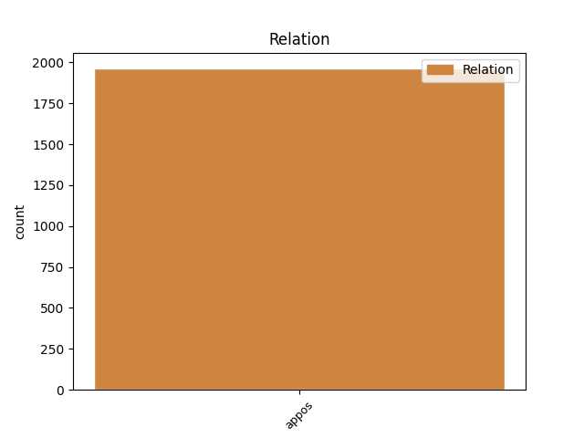
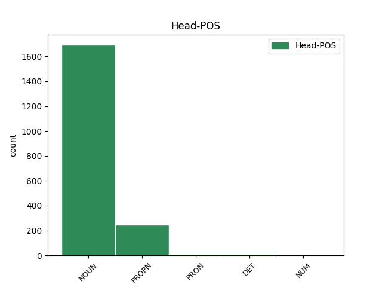
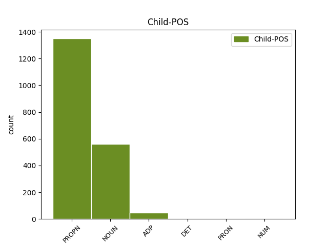

Distribution of features within this leaf



Agreement Rules sorted by frequency.
- When the dependent token is the appositional modifier(appos) of the head token, and the head token is NOUN and the dependent token is PROPN.
1 Kako _ _ _ _ 0 _ _ _
2 je _ _ _ _ 0 _ _ _
3 kazao _ _ _ _ 0 _ _ _
4 riječki _ _ _ _ 0 _ _ _
5 gradonačelnik gradonačelnik NOUN Ncmsn Case=Nom|Gender=Masc|Number=Sing 0 _ _ _
6 Vojko Vojko PROPN Npmsn Case=Nom|Gender=Masc|Number=Sing 5 appos _ _
7 Obersnel _ _ _ _ 0 _ _ _
8 , _ _ _ _ 0 _ _ _
9 pokretanjem _ _ _ _ 0 _ _ _
10 studija _ _ _ _ 0 _ _ _
11 i _ _ _ _ 0 _ _ _
12 programa _ _ _ _ 0 _ _ _
13 cjeloživotnog _ _ _ _ 0 _ _ _
14 učenja _ _ _ _ 0 _ _ _
15 u _ _ _ _ 0 _ _ _
16 Rijeci _ _ _ _ 0 _ _ _
17 će _ _ _ _ 0 _ _ _
18 biti _ _ _ _ 0 _ _ _
19 zaokruženo _ _ _ _ 0 _ _ _
20 učenje _ _ _ _ 0 _ _ _
21 talijanskog _ _ _ _ 0 _ _ _
22 jezika _ _ _ _ 0 _ _ _
23 , _ _ _ _ 0 _ _ _
24 koje _ _ _ _ 0 _ _ _
25 sada _ _ _ _ 0 _ _ _
26 postoji _ _ _ _ 0 _ _ _
27 u _ _ _ _ 0 _ _ _
28 jaslicama _ _ _ _ 0 _ _ _
29 , _ _ _ _ 0 _ _ _
30 vrtićima _ _ _ _ 0 _ _ _
31 te _ _ _ _ 0 _ _ _
32 osnovnim _ _ _ _ 0 _ _ _
33 i _ _ _ _ 0 _ _ _
34 srednjim _ _ _ _ 0 _ _ _
35 školama _ _ _ _ 0 _ _ _
36 . _ _ _ _ 0 _ _ _
1 ( _ _ _ _ 0 _ _ _
2 3 _ _ _ _ 0 _ _ _
3 ) _ _ _ _ 0 _ _ _
4 Za _ _ _ _ 0 _ _ _
5 dio _ _ _ _ 0 _ _ _
6 građevinskog _ _ _ _ 0 _ _ _
7 područja _ _ _ _ 0 _ _ _
8 naselja _ _ _ _ 0 _ _ _
9 Novi _ _ _ _ 0 _ _ _
10 Vinodolski _ _ _ _ 0 _ _ _
11 NA1 _ _ _ _ 0 _ _ _
12 1 _ _ _ _ 0 _ _ _
13 - _ _ _ _ 0 _ _ _
14 registriranu _ _ _ _ 0 _ _ _
15 povijesnu _ _ _ _ 0 _ _ _
16 graditeljsku _ _ _ _ 0 _ _ _
17 cjelinu _ _ _ _ 0 _ _ _
18 , _ _ _ _ 0 _ _ _
19 moguća _ _ _ _ 0 _ _ _
20 su _ _ _ _ 0 _ _ _
21 odstupanja _ _ _ _ 0 _ _ _
22 od _ _ _ _ 0 _ _ _
23 zadanih _ _ _ _ 0 _ _ _
24 graničnih _ _ _ _ 0 _ _ _
25 vrijednosti _ _ _ _ 0 _ _ _
26 navedenih _ _ _ _ 0 _ _ _
27 u _ _ _ _ 0 _ _ _
28 člancima _ _ _ _ 0 _ _ _
29 27. _ _ _ _ 0 _ _ _
30 i _ _ _ _ 0 _ _ _
31 28. _ _ _ _ 0 _ _ _
32 Ovih _ _ _ _ 0 _ _ _
33 Odredbi _ _ _ _ 0 _ _ _
34 ali _ _ _ _ 0 _ _ _
35 samo _ _ _ _ 0 _ _ _
36 u _ _ _ _ 0 _ _ _
37 smislu _ _ _ _ 0 _ _ _
38 uvjeta _ _ _ _ 0 _ _ _
39 određenih _ _ _ _ 0 _ _ _
40 od _ _ _ _ 0 _ _ _
41 nadležnog _ _ _ _ 0 _ _ _
42 Konzervatorskog _ _ _ _ 0 _ _ _
43 odjela _ _ _ _ 0 _ _ _
44 ( _ _ _ _ 0 _ _ _
45 označeno _ _ _ _ 0 _ _ _
46 kao _ _ _ _ 0 _ _ _
47 gradsko _ _ _ _ 0 _ _ _
48 naselje naselje NOUN Ncnsn Case=Nom|Gender=Neut|Number=Sing 0 _ _ _
49 - _ _ _ _ 0 _ _ _
50 zone zona NOUN Ncfpn Case=Nom|Gender=Fem|Number=Plur 48 appos _ _
51 14 _ _ _ _ 0 _ _ _
52 A _ _ _ _ 0 _ _ _
53 i _ _ _ _ 0 _ _ _
54 14 _ _ _ _ 0 _ _ _
55 B _ _ _ _ 0 _ _ _
56 na _ _ _ _ 0 _ _ _
57 kartografskom _ _ _ _ 0 _ _ _
58 prikazu _ _ _ _ 0 _ _ _
59 br. _ _ _ _ 0 _ _ _
60 4.1. _ _ _ _ 0 _ _ _
61 » _ _ _ _ 0 _ _ _
62 Građevinska _ _ _ _ 0 _ _ _
63 područja _ _ _ _ 0 _ _ _
64 « _ _ _ _ 0 _ _ _
65 u _ _ _ _ 0 _ _ _
66 mjerilu _ _ _ _ 0 _ _ _
67 1:5000 _ _ _ _ 0 _ _ _
68 ) _ _ _ _ 0 _ _ _
69 . _ _ _ _ 0 _ _ _
1 Smrt _ _ _ _ 0 _ _ _
2 Stevea Steve PROPN Npmsg Case=Gen|Gender=Masc|Number=Sing 0 _ _ _
3 Jobsa _ _ _ _ 0 _ _ _
4 , _ _ _ _ 0 _ _ _
5 vlasnika vlasnik NOUN Ncmsg Case=Gen|Gender=Masc|Number=Sing 2 appos _ _
6 svjetski _ _ _ _ 0 _ _ _
7 poznate _ _ _ _ 0 _ _ _
8 kompanije _ _ _ _ 0 _ _ _
9 Apple _ _ _ _ 0 _ _ _
10 duboko _ _ _ _ 0 _ _ _
11 je _ _ _ _ 0 _ _ _
12 potresla _ _ _ _ 0 _ _ _
13 kako _ _ _ _ 0 _ _ _
14 svjetsku _ _ _ _ 0 _ _ _
15 tako _ _ _ _ 0 _ _ _
16 i _ _ _ _ 0 _ _ _
17 hrvatsku _ _ _ _ 0 _ _ _
18 javnost _ _ _ _ 0 _ _ _
19 . _ _ _ _ 0 _ _ _
1 Tekst _ _ _ _ 0 _ _ _
2 smo _ _ _ _ 0 _ _ _
3 skinuli _ _ _ _ 0 _ _ _
4 sa _ _ _ _ 0 _ _ _
5 stranica _ _ _ _ 0 _ _ _
6 BK BK PROPN Npmsn Case=Nom|Gender=Masc|Number=Sing 0 _ _ _
7 " _ _ _ _ 0 _ _ _
8 VG VG PROPN Npmsn Case=Nom|Gender=Masc|Number=Sing 6 appos _ SpaceAfter=No
9 " _ _ _ _ 0 _ _ _
10 , _ _ _ _ 0 _ _ _
11 jasno _ _ _ _ 0 _ _ _
12 i _ _ _ _ 0 _ _ _
13 uz _ _ _ _ 0 _ _ _
14 njihovu _ _ _ _ 0 _ _ _
15 dozvolu _ _ _ _ 0 _ _ _
16 , _ _ _ _ 0 _ _ _
17 a _ _ _ _ 0 _ _ _
18 tekst _ _ _ _ 0 _ _ _
19 su _ _ _ _ 0 _ _ _
20 napisali _ _ _ _ 0 _ _ _
21 roditelji _ _ _ _ 0 _ _ _
22 male _ _ _ _ 0 _ _ _
23 Nike _ _ _ _ 0 _ _ _
24 Kager _ _ _ _ 0 _ _ _
25 koja _ _ _ _ 0 _ _ _
26 ima _ _ _ _ 0 _ _ _
27 4 _ _ _ _ 0 _ _ _
28 i _ _ _ _ 0 _ _ _
29 pol _ _ _ _ 0 _ _ _
30 godine _ _ _ _ 0 _ _ _
31 , _ _ _ _ 0 _ _ _
32 i _ _ _ _ 0 _ _ _
33 koja _ _ _ _ 0 _ _ _
34 je _ _ _ _ 0 _ _ _
35 na _ _ _ _ 0 _ _ _
36 zadnjem _ _ _ _ 0 _ _ _
37 Plišanom _ _ _ _ 0 _ _ _
38 Medi _ _ _ _ 0 _ _ _
39 Štedi _ _ _ _ 0 _ _ _
40 u _ _ _ _ 0 _ _ _
41 konkurenciji _ _ _ _ 0 _ _ _
42 do _ _ _ _ 0 _ _ _
43 9 _ _ _ _ 0 _ _ _
44 godina _ _ _ _ 0 _ _ _
45 osvojila _ _ _ _ 0 _ _ _
46 treće _ _ _ _ 0 _ _ _
47 mjesto _ _ _ _ 0 _ _ _
48 . _ _ _ _ 0 _ _ _
1 Sredstva _ _ _ _ 0 _ _ _
2 prikupljena _ _ _ _ 0 _ _ _
3 u _ _ _ _ 0 _ _ _
4 ovim _ _ _ _ 0 _ _ _
5 akcijama _ _ _ _ 0 _ _ _
6 , _ _ _ _ 0 _ _ _
7 HC _ _ _ _ 0 _ _ _
8 je _ _ _ _ 0 _ _ _
9 u _ _ _ _ 0 _ _ _
10 suradnji _ _ _ _ 0 _ _ _
11 sa _ _ _ _ 0 _ _ _
12 svojim _ _ _ _ 0 _ _ _
13 sestrinskim _ _ _ _ 0 _ _ _
14 caritasima _ _ _ _ 0 _ _ _
15 , _ _ _ _ 0 _ _ _
16 Caritasom _ _ _ _ 0 _ _ _
17 Internationalis _ _ _ _ 0 _ _ _
18 i _ _ _ _ 0 _ _ _
19 Caritasom _ _ _ _ 0 _ _ _
20 Europa _ _ _ _ 0 _ _ _
21 te _ _ _ _ 0 _ _ _
22 lokalnim _ _ _ _ 0 _ _ _
23 caritasima _ _ _ _ 0 _ _ _
24 u _ _ _ _ 0 _ _ _
25 svakoj _ _ _ _ 0 _ _ _
26 pojedinoj _ _ _ _ 0 _ _ _
27 zemlji _ _ _ _ 0 _ _ _
28 , _ _ _ _ 0 _ _ _
29 namijenio _ _ _ _ 0 _ _ _
30 za _ _ _ _ 0 _ _ _
31 različite _ _ _ _ 0 _ _ _
32 svrhe svrha NOUN Ncfpa Case=Acc|Gender=Fem|Number=Plur 0 _ _ _
33 , _ _ _ _ 0 _ _ _
34 no _ _ _ _ 0 _ _ _
35 uvijek _ _ _ _ 0 _ _ _
36 u _ _ _ _ 0 _ _ _
37 dogovoru _ _ _ _ 0 _ _ _
38 s _ _ _ _ 0 _ _ _
39 njima _ _ _ _ 0 _ _ _
40 ; _ _ _ _ 0 _ _ _
41 za za ADP Sa Case=Acc 32 appos _ _
42 kupovinu _ _ _ _ 0 _ _ _
43 lijekova _ _ _ _ 0 _ _ _
44 , _ _ _ _ 0 _ _ _
45 školskih _ _ _ _ 0 _ _ _
46 kuta _ _ _ _ 0 _ _ _
47 i _ _ _ _ 0 _ _ _
48 školskog _ _ _ _ 0 _ _ _
49 pribora _ _ _ _ 0 _ _ _
50 , _ _ _ _ 0 _ _ _
51 pribora _ _ _ _ 0 _ _ _
52 za _ _ _ _ 0 _ _ _
53 trudnice _ _ _ _ 0 _ _ _
54 , _ _ _ _ 0 _ _ _
55 pumpi _ _ _ _ 0 _ _ _
56 za _ _ _ _ 0 _ _ _
57 vodu _ _ _ _ 0 _ _ _
58 , _ _ _ _ 0 _ _ _
59 dječje _ _ _ _ 0 _ _ _
60 hrane _ _ _ _ 0 _ _ _
61 , _ _ _ _ 0 _ _ _
62 za _ _ _ _ 0 _ _ _
63 izgradnju _ _ _ _ 0 _ _ _
64 kuća _ _ _ _ 0 _ _ _
65 ili _ _ _ _ 0 _ _ _
66 kupovinu _ _ _ _ 0 _ _ _
67 brodica _ _ _ _ 0 _ _ _
68 . _ _ _ _ 0 _ _ _
1 Recimo _ _ _ _ 0 _ _ _
2 jedan _ _ _ _ 0 _ _ _
3 od _ _ _ _ 0 _ _ _
4 bisera _ _ _ _ 0 _ _ _
5 je _ _ _ _ 0 _ _ _
6 bio _ _ _ _ 0 _ _ _
7 izrečen _ _ _ _ 0 _ _ _
8 od _ _ _ _ 0 _ _ _
9 carice _ _ _ _ 0 _ _ _
10 Jace _ _ _ _ 0 _ _ _
11 Vlaisavljević _ _ _ _ 0 _ _ _
12 kako _ _ _ _ 0 _ _ _
13 ćemo _ _ _ _ 0 _ _ _
14 mi mi PRON Pp1-pn Case=Nom|Number=Plur|Person=1|PronType=Prs 0 _ _ _
15 branitelji branitelj NOUN Ncmpn Case=Nom|Gender=Masc|Number=Plur 14 appos _ _
16 živjeti _ _ _ _ 0 _ _ _
17 relaksirano _ _ _ _ 0 _ _ _
18 . _ _ _ _ 0 _ _ _
1 Situacija _ _ _ _ 0 _ _ _
2 se _ _ _ _ 0 _ _ _
3 zasigurno _ _ _ _ 0 _ _ _
4 neće _ _ _ _ 0 _ _ _
5 poboljšati _ _ _ _ 0 _ _ _
6 otvaranjem _ _ _ _ 0 _ _ _
7 najvećeg _ _ _ _ 0 _ _ _
8 tržišta tržište NOUN Ncnsg Case=Gen|Gender=Neut|Number=Sing 0 _ _ _
9 radne _ _ _ _ 0 _ _ _
10 snage _ _ _ _ 0 _ _ _
11 , _ _ _ _ 0 _ _ _
12 onog onaj DET Pd-nsg Case=Gen|Gender=Neut|Number=Sing|PronType=Dem 8 appos _ _
13 u _ _ _ _ 0 _ _ _
14 Njemačkoj _ _ _ _ 0 _ _ _
15 , _ _ _ _ 0 _ _ _
16 za _ _ _ _ 0 _ _ _
17 građane _ _ _ _ 0 _ _ _
18 tzv. _ _ _ _ 0 _ _ _
19 novih _ _ _ _ 0 _ _ _
20 članica _ _ _ _ 0 _ _ _
21 Europske _ _ _ _ 0 _ _ _
22 unije _ _ _ _ 0 _ _ _
23 . _ _ _ _ 0 _ _ _
1 Premda _ _ _ _ 0 _ _ _
2 ne _ _ _ _ 0 _ _ _
3 tako _ _ _ _ 0 _ _ _
4 opsežnog _ _ _ _ 0 _ _ _
5 opusa _ _ _ _ 0 _ _ _
6 kao _ _ _ _ 0 _ _ _
7 što _ _ _ _ 0 _ _ _
8 su _ _ _ _ 0 _ _ _
9 ovi _ _ _ _ 0 _ _ _
10 hiperproduktivci _ _ _ _ 0 _ _ _
11 , _ _ _ _ 0 _ _ _
12 sa _ _ _ _ 0 _ _ _
13 20 _ _ _ _ 0 _ _ _
14 romana _ _ _ _ 0 _ _ _
15 ( _ _ _ _ 0 _ _ _
16 od _ _ _ _ 0 _ _ _
17 čega _ _ _ _ 0 _ _ _
18 jedan jedan NUM Mlcmsn Case=Nom|Gender=Masc|Number=Sing|NumType=Card 0 _ _ _
19 , _ _ _ _ 0 _ _ _
20 Gordana Gordana PROPN Npfsn Case=Nom|Gender=Fem|Number=Sing 18 appos _ SpaceAfter=No
21 , _ _ _ _ 0 _ _ _
22 u _ _ _ _ 0 _ _ _
23 12 _ _ _ _ 0 _ _ _
24 knjiga _ _ _ _ 0 _ _ _
25 ) _ _ _ _ 0 _ _ _
26 , _ _ _ _ 0 _ _ _
27 tri _ _ _ _ 0 _ _ _
28 drame _ _ _ _ 0 _ _ _
29 i _ _ _ _ 0 _ _ _
30 brojnim _ _ _ _ 0 _ _ _
31 novinskim _ _ _ _ 0 _ _ _
32 tekstovima _ _ _ _ 0 _ _ _
33 još _ _ _ _ 0 _ _ _
34 je _ _ _ _ 0 _ _ _
35 uvijek _ _ _ _ 0 _ _ _
36 iznimno _ _ _ _ 0 _ _ _
37 plodna _ _ _ _ 0 _ _ _
38 , _ _ _ _ 0 _ _ _
39 a _ _ _ _ 0 _ _ _
40 vjerujemo _ _ _ _ 0 _ _ _
41 da _ _ _ _ 0 _ _ _
42 je _ _ _ _ 0 _ _ _
43 i _ _ _ _ 0 _ _ _
44 po _ _ _ _ 0 _ _ _
45 popularnosti _ _ _ _ 0 _ _ _
46 nenadmašena _ _ _ _ 0 _ _ _
47 . _ _ _ _ 0 _ _ _
1 U _ _ _ _ 0 _ _ _
2 Potpićnu _ _ _ _ 0 _ _ _
3 , _ _ _ _ 0 _ _ _
4 u _ _ _ _ 0 _ _ _
5 čijoj _ _ _ _ 0 _ _ _
6 je _ _ _ _ 0 _ _ _
7 industrijskoj _ _ _ _ 0 _ _ _
8 zoni _ _ _ _ 0 _ _ _
9 tvornica _ _ _ _ 0 _ _ _
10 , _ _ _ _ 0 _ _ _
11 žive _ _ _ _ 0 _ _ _
12 i _ _ _ _ 0 _ _ _
13 oni onaj DET Pd-mpn Case=Nom|Gender=Masc|Number=Plur|PronType=Dem 0 _ _ _
14 drugi _ _ _ _ 0 _ _ _
15 , _ _ _ _ 0 _ _ _
16 njeni _ _ _ _ 0 _ _ _
17 manje _ _ _ _ 0 _ _ _
18 ili _ _ _ _ 0 _ _ _
19 više _ _ _ _ 0 _ _ _
20 žestoki _ _ _ _ 0 _ _ _
21 protivnici protivnik NOUN Ncmpn Case=Nom|Gender=Masc|Number=Plur 13 appos _ SpaceAfter=No
22 . _ _ _ _ 0 _ _ _
1 Na _ _ _ _ 0 _ _ _
2 kraju _ _ _ _ 0 _ _ _
3 je _ _ _ _ 0 _ _ _
4 popis _ _ _ _ 0 _ _ _
5 onih _ _ _ _ 0 _ _ _
6 koji _ _ _ _ 0 _ _ _
7 su _ _ _ _ 0 _ _ _
8 dobili _ _ _ _ 0 _ _ _
9 novac _ _ _ _ 0 _ _ _
10 , _ _ _ _ 0 _ _ _
11 njih _ _ _ _ 0 _ _ _
12 426 _ _ _ _ 0 _ _ _
13 , _ _ _ _ 0 _ _ _
14 i _ _ _ _ 0 _ _ _
15 onih onaj DET Pd-mpg Case=Gen|Gender=Masc|Number=Plur|PronType=Dem 0 _ _ _
16 koji _ _ _ _ 0 _ _ _
17 tvrde _ _ _ _ 0 _ _ _
18 da _ _ _ _ 0 _ _ _
19 su _ _ _ _ 0 _ _ _
20 oštećeni _ _ _ _ 0 _ _ _
21 , _ _ _ _ 0 _ _ _
22 njih oni PRON Pp3-pg Case=Gen|Number=Plur|Person=3|PronType=Prs 15 appos _ _
23 40 _ _ _ _ 0 _ _ _
24 , _ _ _ _ 0 _ _ _
25 predao _ _ _ _ 0 _ _ _
26 županu _ _ _ _ 0 _ _ _
27 Jurkoviću _ _ _ _ 0 _ _ _
28 i _ _ _ _ 0 _ _ _
29 institucijama _ _ _ _ 0 _ _ _
30 koje _ _ _ _ 0 _ _ _
31 bi _ _ _ _ 0 _ _ _
32 trebale _ _ _ _ 0 _ _ _
33 interesirati _ _ _ _ 0 _ _ _
34 eventualne _ _ _ _ 0 _ _ _
35 nepravilnosti _ _ _ _ 0 _ _ _
36 . _ _ _ _ 0 _ _ _
1 Christian _ _ _ _ 0 _ _ _
2 Wolff _ _ _ _ 0 _ _ _
3 : _ _ _ _ 0 _ _ _
4 Svijet _ _ _ _ 0 _ _ _
5 i _ _ _ _ 0 _ _ _
6 ono _ _ _ _ 0 _ _ _
7 što _ _ _ _ 0 _ _ _
8 u _ _ _ _ 0 _ _ _
9 njemu _ _ _ _ 0 _ _ _
10 postoji _ _ _ _ 0 _ _ _
11 slučajno _ _ _ _ 0 _ _ _
12 je _ _ _ _ 0 _ _ _
13 , _ _ _ _ 0 _ _ _
14 u _ _ _ _ 0 _ _ _
15 sebi _ _ _ _ 0 _ _ _
16 nema _ _ _ _ 0 _ _ _
17 dovoljan _ _ _ _ 0 _ _ _
18 razlog _ _ _ _ 0 _ _ _
19 svoje _ _ _ _ 0 _ _ _
20 slučajnosti _ _ _ _ 0 _ _ _
21 , _ _ _ _ 0 _ _ _
22 nego _ _ _ _ 0 _ _ _
23 u _ _ _ _ 0 _ _ _
24 nečemu nešto PRON Pi3n-l Case=Loc|Gender=Neut|PronType=Ind 0 _ _ _
25 drugome _ _ _ _ 0 _ _ _
26 , _ _ _ _ 0 _ _ _
27 različitom _ _ _ _ 0 _ _ _
28 od _ _ _ _ 0 _ _ _
29 sebe _ _ _ _ 0 _ _ _
30 , _ _ _ _ 0 _ _ _
31 odnosno _ _ _ _ 0 _ _ _
32 u u ADP Sl Case=Loc 24 appos _ _
33 Bogu _ _ _ _ 0 _ _ _
34 , _ _ _ _ 0 _ _ _
35 čije _ _ _ _ 0 _ _ _
36 je _ _ _ _ 0 _ _ _
37 postojanje _ _ _ _ 0 _ _ _
38 apsolutno _ _ _ _ 0 _ _ _
39 neophodno _ _ _ _ 0 _ _ _
40 . _ _ _ _ 0 _ _ _
1 Sve _ _ _ _ 0 _ _ _
2 pušimo _ _ _ _ 0 _ _ _
3 , _ _ _ _ 0 _ _ _
4 mi mi PRON Pp1-pn Case=Nom|Number=Plur|Person=1|PronType=Prs 0 _ _ _
5 Jobovi Job PROPN Npmpn Case=Nom|Gender=Masc|Number=Plur 4 appos _ SpaceAfter=No
6 . _ _ _ _ 0 _ _ _
1 Naime _ _ _ _ 0 _ _ _
2 , _ _ _ _ 0 _ _ _
3 smatraju _ _ _ _ 0 _ _ _
4 " _ _ _ _ 0 _ _ _
5 da _ _ _ _ 0 _ _ _
6 je _ _ _ _ 0 _ _ _
7 glupo _ _ _ _ 0 _ _ _
8 nazivati _ _ _ _ 0 _ _ _
9 namještaj _ _ _ _ 0 _ _ _
10 imenima _ _ _ _ 0 _ _ _
11 dizajnera _ _ _ _ 0 _ _ _
12 samo _ _ _ _ 0 _ _ _
13 zato _ _ _ _ 0 _ _ _
14 što _ _ _ _ 0 _ _ _
15 je _ _ _ _ 0 _ _ _
16 neki neki DET Pi-msn Case=Nom|Gender=Masc|Number=Sing|PronType=Ind 0 _ _ _
17 od _ _ _ _ 0 _ _ _
18 njih _ _ _ _ 0 _ _ _
19 , _ _ _ _ 0 _ _ _
20 primjerice _ _ _ _ 0 _ _ _
21 , _ _ _ _ 0 _ _ _
22 Philippe Philipp PROPN Npmsn Case=Nom|Gender=Masc|Number=Sing 16 appos _ _
23 Starck _ _ _ _ 0 _ _ _
24 povukao _ _ _ _ 0 _ _ _
25 nekoliko _ _ _ _ 0 _ _ _
26 poteza _ _ _ _ 0 _ _ _
27 olovkom _ _ _ _ 0 _ _ _
28 " _ _ _ _ 0 _ _ _
29 , _ _ _ _ 0 _ _ _
30 ili _ _ _ _ 0 _ _ _
31 koristiti _ _ _ _ 0 _ _ _
32 neka _ _ _ _ 0 _ _ _
33 mitska _ _ _ _ 0 _ _ _
34 imena _ _ _ _ 0 _ _ _
35 što _ _ _ _ 0 _ _ _
36 je _ _ _ _ 0 _ _ _
37 u _ _ _ _ 0 _ _ _
38 svijetu _ _ _ _ 0 _ _ _
39 dizajna _ _ _ _ 0 _ _ _
40 često _ _ _ _ 0 _ _ _
41 slučaj _ _ _ _ 0 _ _ _
42 , _ _ _ _ 0 _ _ _
43 nego _ _ _ _ 0 _ _ _
44 žele _ _ _ _ 0 _ _ _
45 naglasiti _ _ _ _ 0 _ _ _
46 svrhu _ _ _ _ 0 _ _ _
47 . _ _ _ _ 0 _ _ _
1 Zele _ _ _ _ 0 _ _ _
2 Lipovaca _ _ _ _ 0 _ _ _
3 , _ _ _ _ 0 _ _ _
4 virtuoz _ _ _ _ 0 _ _ _
5 na _ _ _ _ 0 _ _ _
6 gitari _ _ _ _ 0 _ _ _
7 , _ _ _ _ 0 _ _ _
8 idejni _ _ _ _ 0 _ _ _
9 je _ _ _ _ 0 _ _ _
10 tvorac _ _ _ _ 0 _ _ _
11 i _ _ _ _ 0 _ _ _
12 utemeljitelj _ _ _ _ 0 _ _ _
13 legendarnih _ _ _ _ 0 _ _ _
14 Divljih _ _ _ _ 0 _ _ _
15 jagoda _ _ _ _ 0 _ _ _
16 : _ _ _ _ 0 _ _ _
17 tamo _ _ _ _ 0 _ _ _
18 gdje _ _ _ _ 0 _ _ _
19 je _ _ _ _ 0 _ _ _
20 i _ _ _ _ 0 _ _ _
21 počeo _ _ _ _ 0 _ _ _
22 , _ _ _ _ 0 _ _ _
23 u _ _ _ _ 0 _ _ _
24 Zagrebu Zagreb PROPN Npmsl Case=Loc|Gender=Masc|Number=Sing 0 _ _ _
25 , _ _ _ _ 0 _ _ _
26 u u ADP Sl Case=Loc 24 appos _ _
27 istome _ _ _ _ 0 _ _ _
28 gradu _ _ _ _ 0 _ _ _
29 danas _ _ _ _ 0 _ _ _
30 nastavlja _ _ _ _ 0 _ _ _
31 novu _ _ _ _ 0 _ _ _
32 odiseju _ _ _ _ 0 _ _ _
33 Divljih _ _ _ _ 0 _ _ _
34 jagoda _ _ _ _ 0 _ _ _
1 A _ _ _ _ 0 _ _ _
2 onaj onaj DET Pd-msn Case=Nom|Gender=Masc|Number=Sing|PronType=Dem 0 _ _ _
3 koji _ _ _ _ 0 _ _ _
4 ne _ _ _ _ 0 _ _ _
5 vjeruje _ _ _ _ 0 _ _ _
6 Boga _ _ _ _ 0 _ _ _
7 , _ _ _ _ 0 _ _ _
8 Njegove _ _ _ _ 0 _ _ _
9 meleke _ _ _ _ 0 _ _ _
10 , _ _ _ _ 0 _ _ _
11 Njegove _ _ _ _ 0 _ _ _
12 Knjige _ _ _ _ 0 _ _ _
13 , _ _ _ _ 0 _ _ _
14 Njegove _ _ _ _ 0 _ _ _
15 poslanike _ _ _ _ 0 _ _ _
16 i _ _ _ _ 0 _ _ _
17 Sudnji _ _ _ _ 0 _ _ _
18 dan _ _ _ _ 0 _ _ _
19 , _ _ _ _ 0 _ _ _
20 taj taj DET Pd-msn Case=Nom|Gender=Masc|Number=Sing|PronType=Dem 2 appos _ _
21 je _ _ _ _ 0 _ _ _
22 daleko _ _ _ _ 0 _ _ _
23 zalutao _ _ _ _ 0 _ _ _
24 . _ _ _ _ 0 _ _ _
25 ( _ _ _ _ 0 _ _ _
26 Kur'an _ _ _ _ 0 _ _ _
27 IV. _ _ _ _ 0 _ _ _
28 136 _ _ _ _ 0 _ _ _
29 ) _ _ _ _ 0 _ _ _
1 Jednostavno _ _ _ _ 0 _ _ _
2 , _ _ _ _ 0 _ _ _
3 neću _ _ _ _ 0 _ _ _
4 crtati _ _ _ _ 0 _ _ _
5 drvo drvo NOUN Ncnsa Case=Acc|Gender=Neut|Number=Sing 0 _ _ _
6 , _ _ _ _ 0 _ _ _
7 nešto nešto PRON Pi3n-a Case=Acc|Gender=Neut|PronType=Ind 5 appos _ _
8 što _ _ _ _ 0 _ _ _
9 je _ _ _ _ 0 _ _ _
10 Bog _ _ _ _ 0 _ _ _
11 napravio _ _ _ _ 0 _ _ _
12 savršeno _ _ _ _ 0 _ _ _
13 , _ _ _ _ 0 _ _ _
14 nego _ _ _ _ 0 _ _ _
15 ću _ _ _ _ 0 _ _ _
16 nacrtati _ _ _ _ 0 _ _ _
17 nešto _ _ _ _ 0 _ _ _
18 što _ _ _ _ 0 _ _ _
19 ja _ _ _ _ 0 _ _ _
20 vidim _ _ _ _ 0 _ _ _
21 , _ _ _ _ 0 _ _ _
22 a _ _ _ _ 0 _ _ _
23 što _ _ _ _ 0 _ _ _
24 možda _ _ _ _ 0 _ _ _
25 netko _ _ _ _ 0 _ _ _
26 drugi _ _ _ _ 0 _ _ _
27 ne _ _ _ _ 0 _ _ _
28 vidi _ _ _ _ 0 _ _ _
29 pa _ _ _ _ 0 _ _ _
30 da _ _ _ _ 0 _ _ _
31 zajedno _ _ _ _ 0 _ _ _
32 proširimo _ _ _ _ 0 _ _ _
33 svoju _ _ _ _ 0 _ _ _
34 percepciju _ _ _ _ 0 _ _ _
35 . _ _ _ _ 0 _ _ _
Disagree Examples:
1 Član _ _ _ _ 0 _ _ _
2 Predsjedništva _ _ _ _ 0 _ _ _
3 Bosne Bosna PROPN Npfsg Case=Gen|Gender=Fem|Number=Sing 0 _ _ _
4 i _ _ _ _ 0 _ _ _
5 Hercegovine _ _ _ _ 0 _ _ _
6 ( _ _ _ _ 0 _ _ _
7 BiH BiH PROPN Npfsn Case=Nom|Gender=Fem|Number=Sing 3 appos _ SpaceAfter=No
8 ) _ _ _ _ 0 _ _ _
9 Željko _ _ _ _ 0 _ _ _
10 Komšić _ _ _ _ 0 _ _ _
11 podnio _ _ _ _ 0 _ _ _
12 je _ _ _ _ 0 _ _ _
13 u _ _ _ _ 0 _ _ _
14 utorak _ _ _ _ 0 _ _ _
15 ( _ _ _ _ 0 _ _ _
16 20. _ _ _ _ 0 _ _ _
17 ožujka _ _ _ _ 0 _ _ _
18 ) _ _ _ _ 0 _ _ _
19 ostavku _ _ _ _ 0 _ _ _
20 na _ _ _ _ 0 _ _ _
21 mjesto _ _ _ _ 0 _ _ _
22 potpredsjednika _ _ _ _ 0 _ _ _
23 Socijaldemokratske _ _ _ _ 0 _ _ _
24 partije _ _ _ _ 0 _ _ _
25 ( _ _ _ _ 0 _ _ _
26 SDP _ _ _ _ 0 _ _ _
27 ) _ _ _ _ 0 _ _ _
28 i _ _ _ _ 0 _ _ _
29 dugogodišnje _ _ _ _ 0 _ _ _
30 članstvo _ _ _ _ 0 _ _ _
31 u _ _ _ _ 0 _ _ _
32 najvišem _ _ _ _ 0 _ _ _
33 vodstvu _ _ _ _ 0 _ _ _
34 stranke _ _ _ _ 0 _ _ _
35 . _ _ _ _ 0 _ _ _
1 Član _ _ _ _ 0 _ _ _
2 Predsjedništva _ _ _ _ 0 _ _ _
3 Bosne _ _ _ _ 0 _ _ _
4 i _ _ _ _ 0 _ _ _
5 Hercegovine _ _ _ _ 0 _ _ _
6 ( _ _ _ _ 0 _ _ _
7 BiH _ _ _ _ 0 _ _ _
8 ) _ _ _ _ 0 _ _ _
9 Željko _ _ _ _ 0 _ _ _
10 Komšić _ _ _ _ 0 _ _ _
11 podnio _ _ _ _ 0 _ _ _
12 je _ _ _ _ 0 _ _ _
13 u _ _ _ _ 0 _ _ _
14 utorak _ _ _ _ 0 _ _ _
15 ( _ _ _ _ 0 _ _ _
16 20. _ _ _ _ 0 _ _ _
17 ožujka _ _ _ _ 0 _ _ _
18 ) _ _ _ _ 0 _ _ _
19 ostavku _ _ _ _ 0 _ _ _
20 na _ _ _ _ 0 _ _ _
21 mjesto _ _ _ _ 0 _ _ _
22 potpredsjednika _ _ _ _ 0 _ _ _
23 Socijaldemokratske _ _ _ _ 0 _ _ _
24 partije partija NOUN Ncfsg Case=Gen|Gender=Fem|Number=Sing 0 _ _ _
25 ( _ _ _ _ 0 _ _ _
26 SDP SDP PROPN Npmsn Case=Nom|Gender=Masc|Number=Sing 24 appos _ SpaceAfter=No
27 ) _ _ _ _ 0 _ _ _
28 i _ _ _ _ 0 _ _ _
29 dugogodišnje _ _ _ _ 0 _ _ _
30 članstvo _ _ _ _ 0 _ _ _
31 u _ _ _ _ 0 _ _ _
32 najvišem _ _ _ _ 0 _ _ _
33 vodstvu _ _ _ _ 0 _ _ _
34 stranke _ _ _ _ 0 _ _ _
35 . _ _ _ _ 0 _ _ _
1 Mnogi _ _ _ _ 0 _ _ _
2 članovi _ _ _ _ 0 _ _ _
3 stranke _ _ _ _ 0 _ _ _
4 smatrali _ _ _ _ 0 _ _ _
5 su _ _ _ _ 0 _ _ _
6 da _ _ _ _ 0 _ _ _
7 je _ _ _ _ 0 _ _ _
8 Lagumdžijina _ _ _ _ 0 _ _ _
9 odluka _ _ _ _ 0 _ _ _
10 o _ _ _ _ 0 _ _ _
11 ulasku _ _ _ _ 0 _ _ _
12 u _ _ _ _ 0 _ _ _
13 koaliciju _ _ _ _ 0 _ _ _
14 sa _ _ _ _ 0 _ _ _
15 Strankom stranka NOUN Ncfsi Case=Ins|Gender=Fem|Number=Sing 0 _ _ _
16 demokratske _ _ _ _ 0 _ _ _
17 akcije _ _ _ _ 0 _ _ _
18 ( _ _ _ _ 0 _ _ _
19 SDA SDA PROPN Npfsn Case=Nom|Gender=Fem|Number=Sing 15 appos _ SpaceAfter=No
20 ) _ _ _ _ 0 _ _ _
21 bila _ _ _ _ 0 _ _ _
22 autokratska _ _ _ _ 0 _ _ _
23 -- _ _ _ _ 0 _ _ _
24 a _ _ _ _ 0 _ _ _
25 potpunom _ _ _ _ 0 _ _ _
26 izdajom _ _ _ _ 0 _ _ _
27 proglasila _ _ _ _ 0 _ _ _
28 ju _ _ _ _ 0 _ _ _
29 je _ _ _ _ 0 _ _ _
30 i _ _ _ _ 0 _ _ _
31 većina _ _ _ _ 0 _ _ _
32 stranačkih _ _ _ _ 0 _ _ _
33 krugova _ _ _ _ 0 _ _ _
34 , _ _ _ _ 0 _ _ _
35 kao _ _ _ _ 0 _ _ _
36 i _ _ _ _ 0 _ _ _
37 građana _ _ _ _ 0 _ _ _
38 koji _ _ _ _ 0 _ _ _
39 su _ _ _ _ 0 _ _ _
40 izrazili _ _ _ _ 0 _ _ _
41 potporu _ _ _ _ 0 _ _ _
42 SDP-u _ _ _ _ 0 _ _ _
43 na _ _ _ _ 0 _ _ _
44 izborima _ _ _ _ 0 _ _ _
45 . _ _ _ _ 0 _ _ _
1 Nema _ _ _ _ 0 _ _ _
2 sumnje _ _ _ _ 0 _ _ _
3 kako _ _ _ _ 0 _ _ _
4 će _ _ _ _ 0 _ _ _
5 naša _ _ _ _ 0 _ _ _
6 akcesija _ _ _ _ 0 _ _ _
7 u _ _ _ _ 0 _ _ _
8 Savez _ _ _ _ 0 _ _ _
9 , _ _ _ _ 0 _ _ _
10 kao _ _ _ _ 0 _ _ _
11 i _ _ _ _ 0 _ _ _
12 akcesija _ _ _ _ 0 _ _ _
13 druge _ _ _ _ 0 _ _ _
14 dvije _ _ _ _ 0 _ _ _
15 zemlje zemlja NOUN Ncfpn Case=Nom|Gender=Fem|Number=Plur 0 _ _ _
16 potpisnice _ _ _ _ 0 _ _ _
17 Jadranske _ _ _ _ 0 _ _ _
18 povelje _ _ _ _ 0 _ _ _
19 - _ _ _ _ 0 _ _ _
20 Albanije Albanija PROPN Npfsg Case=Gen|Gender=Fem|Number=Sing 15 appos _ _
21 i _ _ _ _ 0 _ _ _
22 Hrvatske _ _ _ _ 0 _ _ _
23 - _ _ _ _ 0 _ _ _
24 uvelike _ _ _ _ 0 _ _ _
25 pridonijeti _ _ _ _ 0 _ _ _
26 dodatnoj _ _ _ _ 0 _ _ _
27 stabilizaciji _ _ _ _ 0 _ _ _
28 regije _ _ _ _ 0 _ _ _
29 . _ _ _ _ 0 _ _ _
1 Setimes _ _ _ _ 0 _ _ _
2 : _ _ _ _ 0 _ _ _
3 Nedavno _ _ _ _ 0 _ _ _
4 je _ _ _ _ 0 _ _ _
5 veleposlanik _ _ _ _ 0 _ _ _
6 SAD-a _ _ _ _ 0 _ _ _
7 podsjetio _ _ _ _ 0 _ _ _
8 na _ _ _ _ 0 _ _ _
9 potrebu _ _ _ _ 0 _ _ _
10 implementacije _ _ _ _ 0 _ _ _
11 svibanjskog _ _ _ _ 0 _ _ _
12 sporazuma _ _ _ _ 0 _ _ _
13 vlade _ _ _ _ 0 _ _ _
14 i _ _ _ _ 0 _ _ _
15 Demokratske _ _ _ _ 0 _ _ _
16 unije unija NOUN Ncfsg Case=Gen|Gender=Fem|Number=Sing 0 _ _ _
17 za _ _ _ _ 0 _ _ _
18 ujedinjenje _ _ _ _ 0 _ _ _
19 ( _ _ _ _ 0 _ _ _
20 DUI DUI PROPN Npmsn Case=Nom|Gender=Masc|Number=Sing 16 appos _ SpaceAfter=No
21 ) _ _ _ _ 0 _ _ _
22 . _ _ _ _ 0 _ _ _